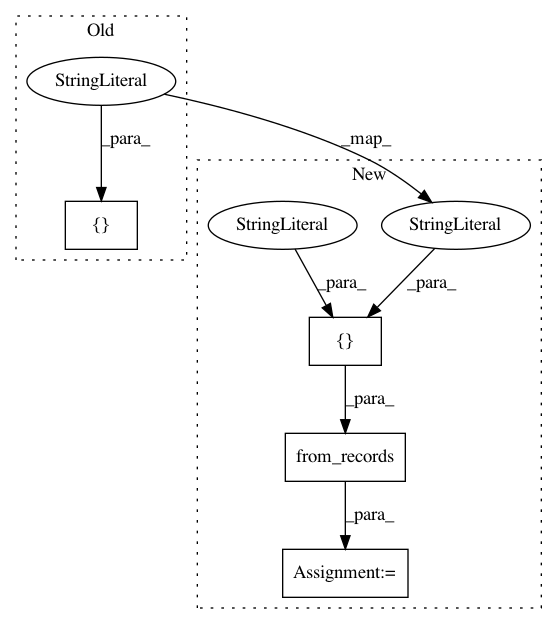

1fe319ef49168c2c7c8d10a7c426c1414521d164,cnvlib/tabio/genepred.py,,read_refflat,#Any#Any#Any#,80
Before Change
dframe["start"] -= 1
// NB: same gene name can appear on alt. contigs
dframe = (dframe.groupby(by=["chromosome", "strand", "gene"],
as_index=False, group_keys=False, sort=False)
.apply(_merge_overlapping))
return dframe
After Change
cols_shared = ["gene", "accession", "chromosome", "strand"]
converters = None
if exons:
cols_rest = ["_start_tx", "_end_tx", // Transcription
"_start_cds", "_end_cds", // Coding region
"_exon_count", "exon_starts", "exon_ends"]
converters = {"exon_starts": _split_commas, "exon_ends": _split_commas}
elif cds:
// Use CDS instead of transcription region
cols_rest = ["_start_tx", "_end_tx",
"start", "end",
"_exon_count", "_exon_starts", "_exon_ends"]
else:
cols_rest = ["start", "end",
"_start_cds", "_end_cds",
"_exon_count", "_exon_starts", "_exon_ends"]
colnames = cols_shared + cols_rest
usecols = [c for c in colnames if not c.startswith("_")]
// Parse the file contents
dframe = pd.read_table(infile, header=None, na_filter=False,
names=colnames, usecols=usecols,
dtype={c: str for c in cols_shared},
converters=converters)
// Calculate values for output columns
if exons:
dframe = pd.DataFrame.from_records(_split_exons(dframe),
columns=cols_shared + ["start", "end"])
dframe["start"] = dframe["start"].astype("int")
dframe["end"] = dframe["end"].astype("int")
return (dframe.assign(start=dframe.start - 1)
.sort_values(["chromosome", "start", "end"])
.reset_index(drop=True))
In pattern: SUPERPATTERN
Frequency: 3
Non-data size: 4
Instances
Project Name: etal/cnvkit
Commit Name: 1fe319ef49168c2c7c8d10a7c426c1414521d164
Time: 2016-10-28
Author: eric.talevich@gmail.com
File Name: cnvlib/tabio/genepred.py
Class Name:
Method Name: read_refflat
Project Name: etal/cnvkit
Commit Name: 7c03f6dd8be4ee7de7f4a120984db889fafe9c28
Time: 2016-05-19
Author: eric.talevich@gmail.com
File Name: cnvlib/commands.py
Class Name:
Method Name: do_gainloss
Project Name: catalyst-cooperative/pudl
Commit Name: f16caed22853e2936fe051875d0aaeaa8b7f1a2f
Time: 2017-02-21
Author: zane.selvans@catalyst.coop
File Name: pudl/constants.py
Class Name:
Method Name: